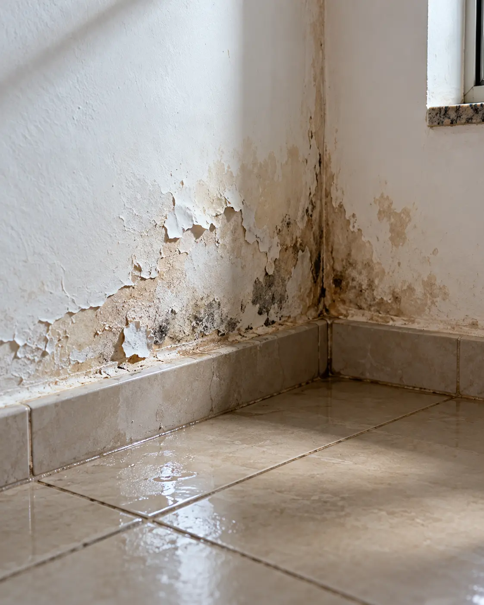
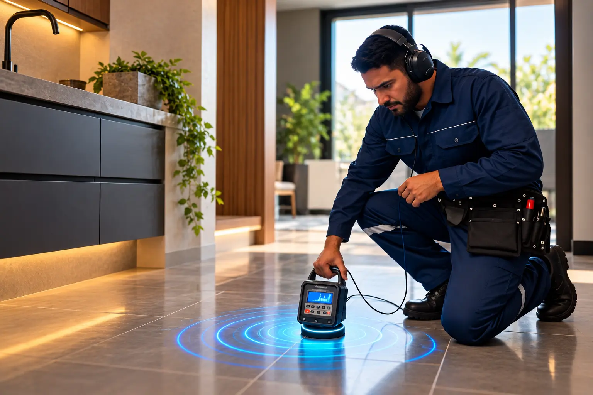
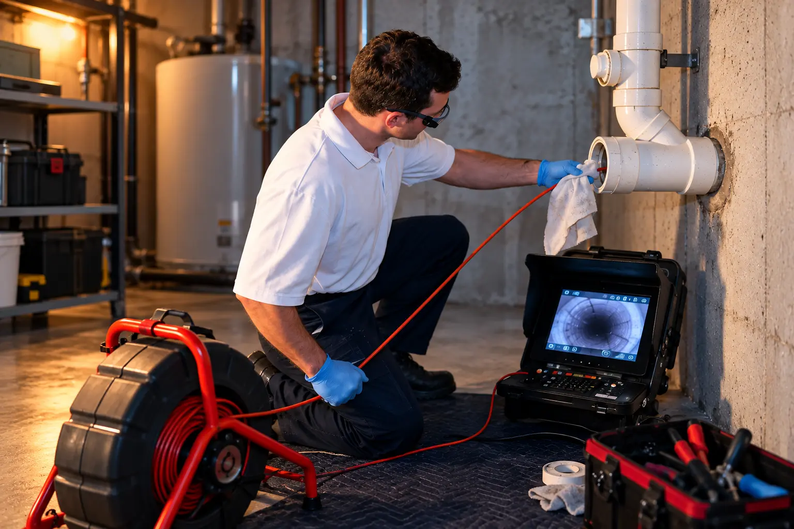
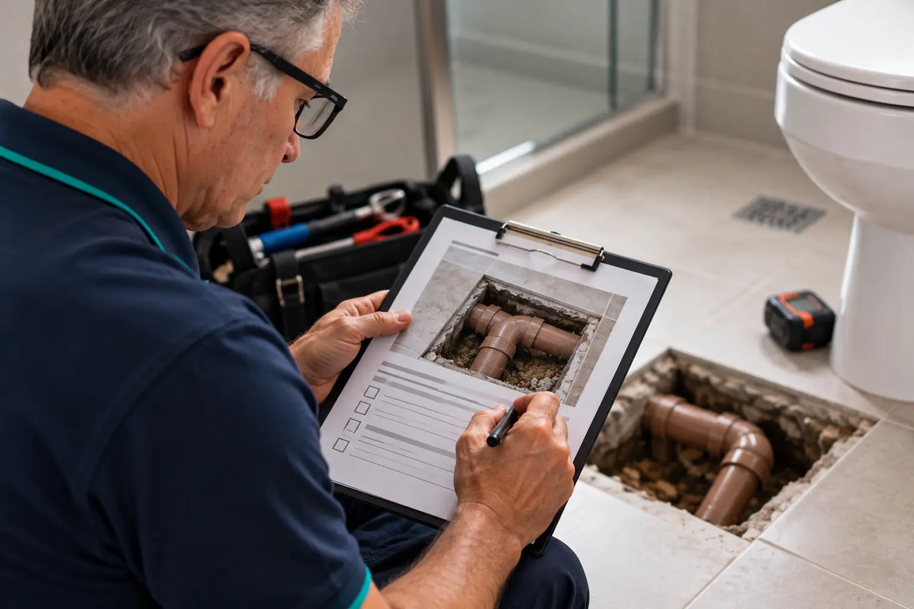
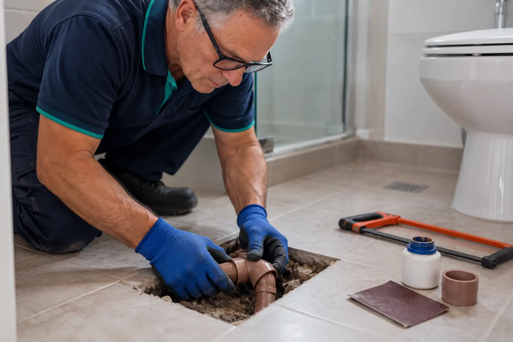

Encontra o ponto exato em tubulação de parede, piso, laje e área externa. Quebra só onde o vazamento está.
Almeida escuta o vazamento
Localização de vazamentos com geofone digital e vídeo inspeção em Franco da Rocha e região. Casa ou comércio, orçamento pelo WhatsApp.
- +29anos de experiência
- 7cidades atendidas
- 1mensagem para pedir o orçamento
Ache o vazamento
Tem um cano vazando embaixo deste piso. Toque nos quadrados e acompanhe o sinal: quanto mais forte, mais perto.
0%
Nenhum toque ainda.
Sinais de vazamento escondido

Como é o atendimento
-
Primeiro, você chama.
Manda mensagem no WhatsApp e conta o que está vendo.
-
Depois, a gente escuta.
O geofone digital capta o som da água escapando dentro do cano.
-
Aí o ponto é marcado.
Você fica sabendo onde está o vazamento antes de qualquer quebra.
-
No fim, laudo e reparo.
Você recebe o laudo, a orientação e o conserto no ponto certo.
O que o Almeida faz

Um sensor encostado no piso ou na parede amplifica o ruído da água sob pressão. Onde o som é mais forte, está o vazamento.

Uma câmera percorre a tubulação por dentro e mostra entupimento, trinca ou junta solta na tela.

Registro claro do diagnóstico.

Com o ponto marcado, o conserto é feito no local.
Onde o Almeida atende
Atendimento residencial e comercial em sete cidades.
- Franco da Rocha
- Caieiras
- Francisco Morato
- Jundiaí
- Mairiporã
- Atibaia
- Bragança Paulista
Sobre a Caça Vazamento Almeida
Caça Vazamento Almeida atende casas e comércios em Franco da Rocha e região há mais de 29 anos, com geofone digital e câmera de vídeo inspeção.
Escuta a tubulação e marca o ponto antes de qualquer quebra. O atendimento é rápido porque vazamento não espera: cada dia de cano aberto é água paga e estrutura molhada.
- Franco da Rocha e região, SP
- Mais de 29 anos de experiência
- (11) 94005-8415
Dúvidas
Como sei se tenho vazamento?
Feche todas as torneiras e não use água por alguns minutos. Olhe o hidrômetro. Se ele continuar girando, tem vazamento.
Precisa quebrar para achar?
Não. O geofone e a câmera localizam o ponto sem quebrar. A quebra é só para o reparo, e só naquele ponto.
Atende comércio?
Sim. O atendimento é residencial e comercial: casas, lojas, restaurantes, galpões e escritórios.
Atende fora de Franco da Rocha?
Sim. Além de Franco da Rocha, atende Caieiras, Francisco Morato, Jundiaí, Mairiporã, Atibaia e Bragança Paulista.
Quanto custa?
Depende do imóvel e do tipo de vazamento. Fale conosco pelo WhatsApp para saber mais.
Chame antes de quebrar
Mande uma mensagem agora e diga o que está acontecendo. Fale conosco pelo WhatsApp.